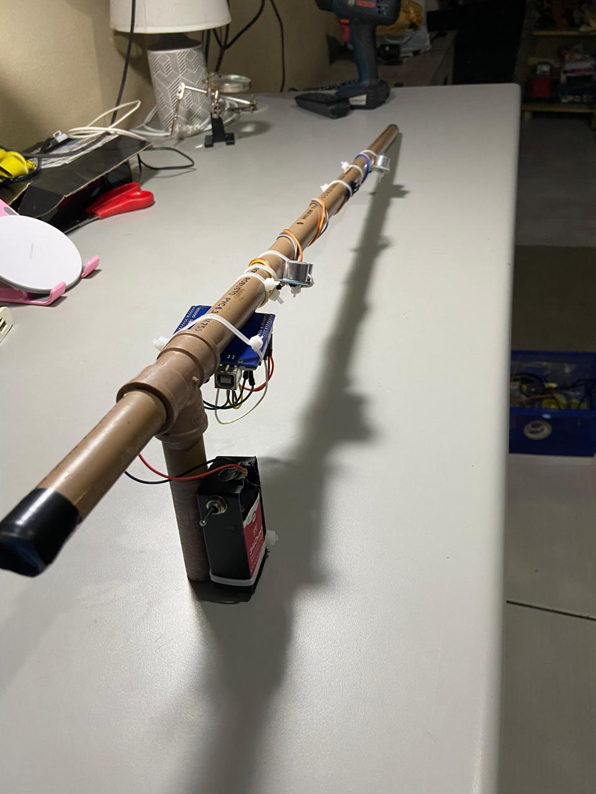
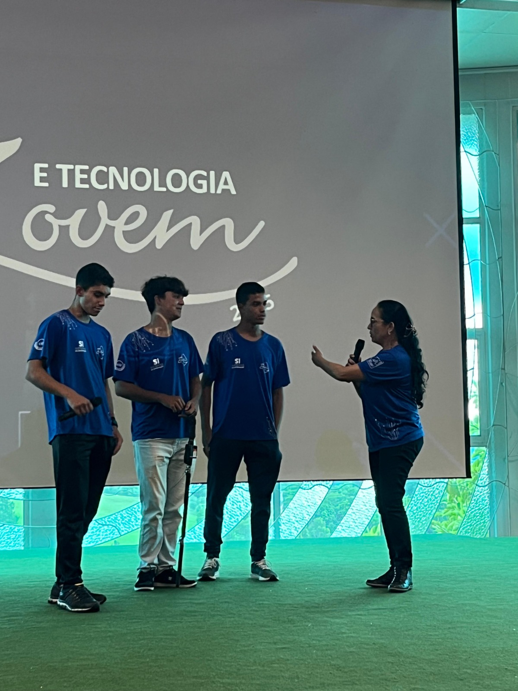

O projeto em construção



Chega de caminhar sem ter noção do que está à sua volta. A Bengala Supersônica foi criada para quem não abre mão de estilo, segurança e confiança. Tecnologia de ponta encontra tradição em um só acessório.
Quero a minhaCom a possibilidade de detectar obstáculos à frente, a bengala permite que você caminhe com confiança e segurança, evitando acidentes e quedas.
Sem fugir muito da bengala tradicional, é foi desenhada para ser eficiênte e elegante, com um visual moderno e sofisticado que combina com qualquer estilo.
Ganhe ritmo aos poucos até atingir sua velocidade de cruzeiro ideal, com total controle e segurança a cada passo.
Estrutura leve, sem precisar de muito esforço para usar.
Botôes te controle simples e faceis de usar.
EM breve!


Somos uma equipe de estudantes desenvolvendo esta tecnologia do protótipo à apresentação em feiras de ciência. Com o apoio de patrocinadores, podemos melhorar os componentes, aperfeiçoar o design e levar o projeto para mais pessoas.
Quero ser patrocinadorDê o próximo passo — literalmente. Clique no botão abaixo e faça seu pedido.
Comprar agora